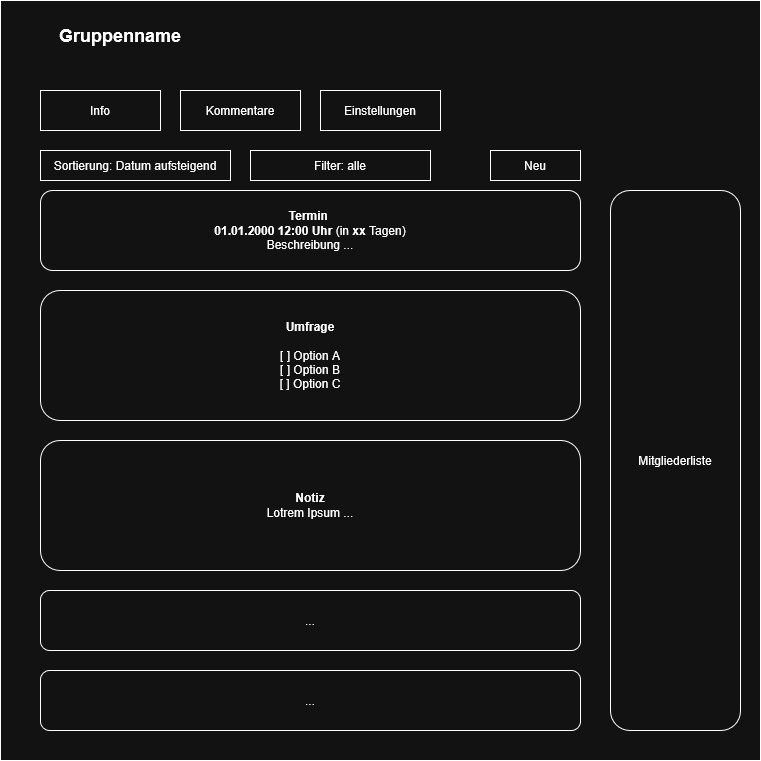
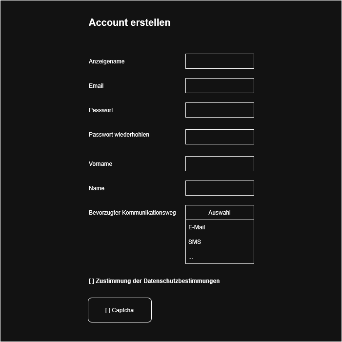
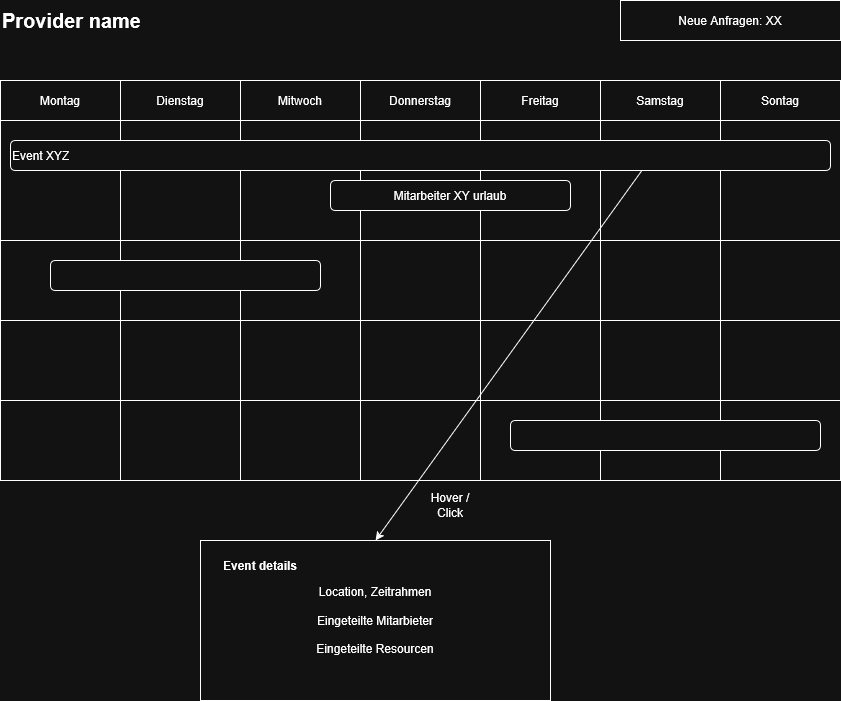

diagrams/ (PlantUML‑Quellen)db/schema.sqlmockups/api/openapi.yamlFür jedes Kapitel (kurze Checkliste / erwartete Artefakte):
Hinweis zur Organisation: Die Requirements‑Tabelle ist die kanonische Quelle und bleibt in Kapitel 4; in den 4+1‑Sichten referenzierst du Story‑IDs (nicht kopieren). Eine Traceability‑Matrix (Anhang E) verbindet Requirements mit Use‑cases, Klassen, Endpunkten und Tests.
Kurzfassung (Executive Summary)
Dieses Dokument beschreibt die Spezifikation für eine Plattform zur Planung, Organisation und Durchführung von Gruppen‑Events (z. B. Reisen, Vereins‑ oder Firmenveranstaltungen). Kernnutzen: Teilnehmer können Gruppen anlegen/verwalten, Termine/Umfragen/Finanzen koordinieren und externe Dienstleister (z. B. Veranstaltungstechnik) buchen. Die Lösung adressiert sowohl Privatnutzer als auch kommerzielle Dienstleister und bietet ein Provider‑Portal, Zahlungs‑ und Rechnungsfunktionen sowie Compliance‑ und Betriebsmechanismen (Monitoring, Backups, DSGVO‑Workflows).
Zielsetzung: Eine sichere, skalierbare Web‑ und Mobile‑Plattform, die Gruppen‑Organisation, Zahlungsabwicklung und Dienstleister‑Management in einem integrierten Workflow unterstützt.
Wichtige Kennzahlen
Scope (konkret)
Priorisierte Annahmen
Top‑Risiken (priorisiert)
Akzeptanzkriterien für die Deliverables (Kurz)
Empfohlene nächste Schritte (priorisiert)
Akzeptanz der Zusammenfassung
| Name | Beschreibung |
|---|---|
| Gruppe | Eine Sammlung an Nutzern die sich über eine Gruppe austauschen können |
| Benutzer | Ein Nutzer von unserem Service |
| Dienstleister | Ein Externer Dienstleister der auf unser Platform vertreten ist und von Gruppen beauftragt werden können |
| System | Stellvertreten für uns als Service oder Serviceanbieter |
| Owner | Der Benutzer, der eine Gruppe erstellt hat |
| Admin | Ein Gruppenmitglied mit erhöhten rechten innerhalb einer Gruppe |
Kurzbeschreibung
Die Plattform ist als cloud‑native, dreischichtige Web‑/Mobile‑Anwendung ausgelegt: klientenseitig (Web / Mobile), API‑Layer (Gateway / Edge) und ein Backend‑Service‑Ökosystem (auth, groups, payments, provider, media, notifications, background workers). Persistente Daten liegen in einer relationalen Primärdatenbank; große Binärdaten (Fotos/Videos) werden in Object Storage abgelegt. Caching, Message‑Broker und Suchindex sind zusätzliche Komponenten zur Skalierung.
Hauptkomponenten (Übersicht)
Hoch‑level Daten‑/Control‑Flow Client (Web/Mobile) --HTTPS--> API Gateway --Auth--> Backend Service (REST/gRPC) --> RDBMS / Cache / Broker. Asynchrone Aufgaben werden über den Broker an Worker delegiert; Webhooks und externe Integrationen (Payments, Calendar, Email/SMS) laufen über dedizierte adapters mit Idempotenz‑Handling.
Deployment / Physical View (Kurzfassung)
Integration & API‑Contract
api/openapi.yaml (Anhang D). Alle öffentlichen Endpunkte sollen eine Versionierung und Rate‑Limit haben.Security — STRIDE (Kurz‑Analyse & Mitigation)
Operations & SRE
Artefakte & Mockups
mockups/). Verweise zu einzelnen Screens sind zusätzlich in den Use‑cases (Kapitel 5.1) aufzuführen.| Name/ID | In meiner Rolle als ... | möchte ich ... | , so dass... | Akzeptiert, wenn... | Priorität |
|---|---|---|---|---|---|
| user anmelden | Benutzer | mich bei dem Service Anmelden | ich mich anmelden kann | User können sich anmelden | Muss |
| user registrieren | Benutzer | mich bei dem Service registrieren | ich mich registrieren kann | User können sich registrieren | Muss |
| user username | Benutzer | einen benutzernahmen angeben | dieser für mich angezeigt wird | User kann username eingeben | Kann |
| user name | Benutzer | Meinen legalen Namen angeben können | Rechnungen Automatisch erstellt werden können | der User seinen Namen angeben kann | Kann |
| user email | Benutzer | eine E-Mail angeben | ich benachrichtigt werden kann | User kann E-Mail eingeben | Kann |
| user communication | Benutzer | meinen bevorzugten Kommunikationsweg angeben | ich über diesen Weg wichtige Benachrichtigungen erhalten kann | der User seinen bevorzugten Kommunikationsweg angeben kann | Kann |
| user password (double) | Benutzer | ein Password angeben (zweimal) | Schreibfehler werden vermieden | Passwort muss zweimal eingegeben werden; Mindeststärke geprüft (z.B. 8+ Zeichen, Zahl, Sonderzeichen) | Muss |
| password hash | System | dass mein Password gehasht und gesaltet wird | Passwörter nicht im Klartext gespeichert werden | Passwörter mit einem modernen KDF (z. B. Argon2/bcrypt) + Salt gespeichert | Muss |
| password reset | Benutzer | mein Passwort zurücksetzen können | ich wieder Zugriff erhalte | Reset per E‑Mail mit einmaligem Token (gültig 1 h); nach Reset erfolgt Benachrichtigung an alle aktiven Sessions | Muss |
| session & logout | Benutzer / System | aktiv angemeldete Sessions verwalten (Logout, Session‑Timeout, Revoke) | Konten sicher bleiben, auch bei Geräteverlust | Benutzer können sich abmelden; Sessions verfallen automatisch (configurierbar); Admin kann Sessions widerrufen | Muss |
| register captcha | System | dass der User bei der Registrierung ein Captcha lösen muss | sich Bots nicht so einfach registrieren können | Registrierung kann optional ein Captcha verlangen (konfigurierbar) | Soll |
| E‑Mail verification | System | dass der User bei der Registrierung seine E‑Mail überprüfen muss | E‑Mail‑Besitz ist verifiziert | Verifikationslink (24 h Gültigkeit); Konto eingeschränkt bis zur Verifikation | Muss |
| user page after login | Benutzer | nach dem login auf eine Seite mit einer übersicht über Gruppen kommen | ich auf Anhieb eine Übersicht über meine Gruppen habe | wenn die user homepage die Gruppenübersicht ist | Muss |
| Gruppenübersicht | Benutzer | eine übersicht über Mein, Beigetretenen und Öffentliche Gruppen haben | ich eine Übersicht über die für mich interessanten Gruppen habe | der User eine Übersicht über die Gruppen, denen er beigetreten, die er erstellt und die für ihn interessant sind, hat | Muss |
| Gruppenübersicht sortieren | Benutzer | die Liste der verfügbaren Gruppen sortieren | mir Gruppen entsprechend meines aktuellen Interesses angezeigt werden | der User die angezeigte Liste an Gruppen sortieren kann | Kann |
| Gruppenübersicht navigieren | Benutzer | durch anwählen zu der angewählten Gruppe gelangen | ich mit der Angewählten Gruppe interagieren kann | der User durch anwählen zu einer Gruppe Navigieren kann | Muss |
| Gruppe erstellen | Benutzer | eine neue Gruppe erstellen können | eine Gruppe mit Start‑/Enddatum anlegen | Pflichtfelder: Name, Sichtbarkeit (öffentlich/privat/hidden); Ersteller = Owner; Erzeugung liefert feste Event‑URL und Join‑Code | Muss |
| Gruppe löschen (Owner) | Owner | eine selbst erstellte Gruppe löschen können | die Daten nicht mehr für Teilnehmer sichtbar sind | Nur Owner kann löschen; Lösch‑Workflow zeigt Folgen (Archivieren vs. vollständiges Löschen) und erfordert Bestätigung | Muss |
| Gruppe beitreten | Benutzer | einer bestehenden Gruppe beitreten können | ich Teilnehmer der Gruppe werde | Beitritt per Join‑Code / Einladungs‑Link oder öffentliche Gruppe; Beitritt erscheint sofort in Mitgliederliste | Muss |
| Gruppenmitglieder | Gruppenmitglied | sehen, wer sonst noch in der Gruppe ist | ich weiß, wer teilnimmt | Mitgliederliste mit Rollen (Owner, Admin, Member); Datenschutz: nur für berechtigte Nutzer sichtbar | Muss |
| Invite‑Code verwalten | Owner / Admin | Join‑Codes erzeugen, Ablaufdatum setzen und widerrufen | nur berechtigte Personen beitreten können | Codes haben optionales Ablaufdatum; Owner kann Codes sofort invalidieren | Muss |
| Gruppeneinladung link | Benutzer | einer Gruppe über einen festen Link beitreten können | einfache Einladung möglich ist | Einladungs‑Link ist stabil oder hat konfigurierbares Ablaufdatum; Nutzung protokolliert | Muss |
| Gruppeneinladung qr | Benutzer | einer Gruppe über einen QR‑Code beitreten können | einfacher Beitritt via Mobilgerät | QR codiert die Event‑URL/Join‑Code; Ablaufregel wie bei Link | Kann |
| Gruppenbeschreibung setzen | Gruppenmitglied | eine Gruppenbeschreibung setzen | klarer Kontext für die Gruppe | Beschreibung editierbar; Änderungen protokolliert; nur berechtigte Rollen dürfen großflächig bearbeiten | Kann |
| Gruppe verlassen | Gruppenmitglied | eine Gruppe verlassen können | ich erhalte keine weiteren Benachrichtigungen | Mitglieder können selbstständig austreten; Einzahlungen werden gemäß Regeln behandelt (siehe Einzahlungs‑Policy) | Muss |
| Gruppe Mindestteilnehmer | Owner / Admin | eine Mindestteilnehmerzahl festlegen | Event findet nur ab Mindestanzahl statt | Mindestanzahl wird angezeigt; bei Unterschreitung Benachrichtigung an Owner | Muss |
| Gruppe Mindestbetrag (vereint) | Owner / Admin | einen Mindestbeitrag für das Event festlegen | Finanzierungssicherheit des Events | Mindestbetrag sichtbar auf Event‑Homepage; System meldet "erreicht"/"offen"; automatische Aktionen (z. B. Cancel/Refund) konfigurierbar | Muss |
| Gruppe max. Einzahlung (optional) | Gruppenmitglied | optional ein System‑Limits setzen/anzeigen | Missbrauch oder Fehler vermeiden | System kann ein optionales Oberlimit pro Zahlung konfigurieren; wenn nicht gesetzt, gilt "kein Limit" | Kann |
| Gruppe Einzahlungsübersicht | Gruppenmitglied | Übersicht über alle eingegangenen Zahlungen | ich sehe wer wie viel bezahlt hat | Tabelle mit Beträgen, Datum, Zahler; Summen und ausstehender Betrag; Export (CSV/JSON) möglich | Muss |
| Gruppe Kassensturz | Gruppenmitglied | eine Übersicht über alle Ausgaben der Gruppe habe | ich diese den Einzahlungen gegenüber stellen kann | Gruppenmitglieder eine Übersicht über die Ausgaben einer Gruppe haben | Muss |
| Gruppe Info-Übersicht | Gruppenmitglied | eine Chronologische übersicht über alle Notizen, Termine und Umfragen | neue Infos auf den ersten Blick erkenne | Gruppenmitglieder eine chronologische Übersicht über die Gruppeninformationen haben | Muss |
| Gruppe Info-Übersicht sortieren | Gruppenmitglied | die Angezeigten Infos sortieren können | die für mich relevanten Infos an erste stelle stehen | Gruppenmitglieder können die angezeigten Infos sortieren | Kann |
| Gruppe Notizen | Gruppenmitglied | der Gruppe eine neue Notiz hinzufügen | ich Infos und Erlebnisse mit den anderen Gruppenmitgliedern teilen kann | Gruppenmitglieder neue Notizen hinzu fügen können | Muss |
| Gruppen Termine | Gruppenmitglied | der Gruppe ein neues Datum als Termin hinzufügen können | ich wichtige Termine mit den anderen Gruppenmitgliedern Teilen kann | Gruppenmitglieder einer Gruppe Termine hinzufügen können | Muss |
| Gruppenumfragen | Gruppenmitglied | der Gruppe eine Umfrage hinzufügen können | ich die Präferenzen der anderen Gruppenmitglieder erfragen kann | Gruppenmitglieder Umfragen erstellen können | Kann |
| Umfrage type | Gruppenmitglied | Umfragen mit verschiedene Typen erstellen | ich Gruppenmitgliedern Single und Multiple choice fragen stellen | Gruppenmitglieder bei der Erstellung von Umfragen die Wahl zwischen Single und Multiple choice Aufgaben haben | Muss |
| Zufriedenheit‑Umfrage | Gruppenersteller | nach dem Event / Urlaub eine Zufriedenheitsumfrage erstellen | ich weiß, wie zufrieden die Gruppenmitglieder mit der Planung / Durchführung des Events waren | Gruppenersteller nach einem Event eine Zufriedenheitsumfrage an die Gruppenmitglieder senden können | Kann |
| Gruppendokumentation (Media) | Gruppenmitglied | Kommentare, Bilder und Videos hochladen | Event dokumentieren | Upload erlaubt (Whitelist‑MIME), Max‑Größe konfigurierbar, Moderations‑Flag | Kann |
| Gruppen‑Lifecycle (state machine) | Owner / System | Eventzustände (Draft→Open→Confirmed→Cancelled→Archived) verwalten | automatisierbare Abläufe möglich | Zustandsübergänge definiert; bei Cancel automatischer Refund‑Pfad / Benachrichtigung möglich | Muss |
| Zahlungs‑Webhook Idempotenz | System | eingehende Payment‑Events idempotent verarbeiten | keine Doppelbuchungen entstehen | Webhook‑Events mit Idempotency‑Key; wiederholte Zustellungen erzeugen kein Duplikat | Muss |
| Gruppen‑Zeitraum | Gruppenmitglied | einen Zeitpunkt / Zeitraum festlegen | ich kommuniziere, wann das Event stattfindet | Start/End‑Datum vorhanden; Zeitzone angegeben; wiederkehrende Termine optional | Muss |
| Gruppen: Aufgaben (create) | Gruppenmitglied | Aufgaben erstellen | Team-Aufgaben verwaltbar sind | Neue Aufgabe wird in Gruppen-Task‑Liste angezeigt; Pflichtfelder: Titel, Fälligkeitsdatum; API-Response 201 | Muss |
| Gruppen: Aufgabe zuweisen | Gruppenmitglied | Aufgaben einem Mitglied zuweisen | Zuständigkeiten klar sind | Zuweisung ändert Task-Status; Benachrichtigung an Empfänger innerhalb 5 min | Muss |
| Gruppen: Aufgabe abschließen | Gruppenmitglied | Aufgabe als erledigt markieren | Aufgabenstatus aktuell ist | Statuswechsel sichtbar für alle Mitglieder; Änderungs-Log vorhanden | Muss |
| Aufgaben: Erinnerungen (configurable) | Gruppenmitglied | Erinnerungen per bevorzugtem Kanal erhalten | Deadlines nicht verpasst werden | Erinnerung per E‑Mail/Push/SMS laut Präferenz; konfigurierbar; Zustellung innerhalb 5 min vor Fälligkeit (configurable) | Kann |
| Rollen & Rechte (RBAC Basis) | Gruppen-Owner | Rollen (Owner/Admin/Member) vergeben | Zugriff und Aktionen steuerbar sind | Owner kann Rollen ändern; Berechtigungen enforced (z. B. nur Owner kann Gruppe löschen) | Muss |
| Owner auto‑assignment | Gruppenersteller | nach Erstellung Owner sein | Einstellungen verwalten zu können | Ersteller ist Owner; Owner-Flag in DB gesetzt | Muss |
| Mitgliederverwaltung | Gruppen-Admin | Mitglieder entfernen / einladen | Moderation möglich ist | Admin kann Mitglied entfernen; Aktion audit‑logged; entfernte Nutzer verlieren Zugriff sofort | Muss |
| Editions: Community / Premium | User | freie / kostenpflichtige Pläne nutzen | Produkt‑Limits durchsetzen | Community: ≤3 aktive Gruppen; Premium: keine Limit; Abrechnung aktiviert für Premium | Muss |
| Multi‑device parity | User | gleiches Funktionsset auf allen Geräten | konsistente UX | Kernfunktionen auf Mobile/Web verfügbar; responsives Layout (breakpoints) | Muss |
| Dienstleister: Listing & Angebot | Dienstleister | Dienstleistung einstellen & Angebot erstellen | Veranstalter finden passende Anbieter | Listing mit Pflichtfeldern; Angebot enthält Preise (Netto/Brutto), Positionen, Fotos; Download als PDF möglich | Muss |
| Dienstleister: Buchung & Budget | Gruppenmitglied | Dienstleister buchen; Budget setzen | Planung & Kostenkontrolle möglich | Buchung erzeugt Reservierung; Budget‑Limit verhindert Überbuchung; Bestätigung & Storno‑API vorhanden | Muss |
| Dienstleister: Ressourcen & Mitarbeiter | Dienstleister | Material & Personal verwalten | Verfügbarkeit planbar ist | Ressourcen können geblockt/entblockt werden; Mitarbeiter‑Calendar sichtbar; Konflikte verhindert | Muss |
| Bewertungen & Feedback | Gruppenmitglied | Dienstleister bewerten | Qualität transparent wird | Bewertung nur nach abgeschlossenem Event; Anzeige mittelt Bewertungen; Missbrauchs-Moderation möglich | Kann |
| Material‑Lifecycle (Wartung) | Dienstleister | Wartungszyklen verwalten | Ausfälle planbar sind | Wartungs‑Reminder configurable; Historie pro Asset vorhanden | Muss |
| Abrechnung: Rechnung + Mahnwesen | Dienstleister / Organisator | Rechnungen automatisch erzeugen / Mahnungen senden | Zahlungen eingetrieben werden | Rechnung generiert aus Angebot; PDF/CSV-Export; Mahnung nach konfigurierbarer Frist (z. B. 30 Tage) | Muss |
| DSGVO – Datenexport & Löschung | Benutzer | meine Daten exportieren/ löschen lassen | Recht auf Auskunft / Vergessenwerden erfüllt ist | User kann vollständigen Datenexport (JSON/CSV) anfordern; Löschung führt zu Anonymisierung/Entfernung innerhalb 30 Tage; Audit-Log der Anfrage | Muss |
| Sicherheit: Auth & Sessions | Benutzer/System | 2‑Faktor, Session‑Timeout, Account‑Lockout | Konten sicher sind | Passwort-Hashing mit Argon2/bcrypt; 2FA optional; Session default 30 min idle; Account lock after 5 failed attempts (configurable) | Muss |
| Payments: Webhook Idempotenz & Refunds | System | sichere Zahlungsabwicklung | keine Doppelbuchungen; Rückerstattungen möglich | Webhooks idempotent; Refunds via API in <72 h; reconciliations reportierbar | Muss |
| Observability & Ops | Betreiber | Monitoring, Logging, Backups | Betriebssicherheit gewährleistet | 99.5% availability target (SLA); zentrale Logs (retention 90d); tägliche Backups; Alerts bei Fehlern | Soll |
| API: Contract & Rate Limits | Integrator | stabile API nutzen | Integration zuverlässig bleibt | OpenAPI spec vorhanden; 95th pct response <500ms; rate limit 1000 req/min per API key | Soll |
| Accessibility (WCAG) | User | barrierefreien Zugang haben | inklusiver Betrieb | WCAG 2.1 AA für Kern-User‑Flows | Soll |
| Testing & CI/CD | Entwickler | automatisierte Qualitätssicherung | Regressionen verhindert werden | Unit/Integration/E2E in CI; PRs müssen CI grünes Licht haben | Muss |
A user sends a request to create a new group. His session is validated and on successful validation the group is created. After the group is created the user can be redirected to the groups page.
sequenceDiagram
actor User
participant UI as Web UI / Mobile
participant Groups as Groups Service
participant Auth as Auth service
participant DB@{ "type" : "database" }
User ->> UI : Open 'Create group' form
UI ->> Auth : validate session
Auth -->> UI : 200 OK
UI ->> Groups : POST /api/v1/groups {payload}
Groups ->> DB : INSERT group + owner
DB -->> Groups : groupId
Groups -->> UI : 201 Created { groupId }
UI -->> User : Show confirmation and open Group
{
name : Provided by user
groupId" : Automatically generated unique id
visibility : Provided by user (default Private)
}
An exiting group member can access an invite link through the UI. This invite link can be send to other users. If another user opens that invite link, the join process is stared. First it is validated if the user is allowed to join the group (ie: not blocked, etc.). If the user is allowed to join the User is displayed basic information about the Group so that he can ensure that he is joining the group he is intending to. If the user confirms, the user is added as a group member. The user the receives confirmation of the successful join and is redirected to the groups page. If the user is already part of the group he can be redirected to the groups page directly.
sequenceDiagram
actor Inviter
actor Invited
participant UI as Web UI / Mobile
participant Groups as Groups Service
participant Auth as Auth service
participant DB@{ "type" : "database" }
Inviter ->> UI : Open group info 'Invite' UI
UI ->> Auth : validate session
Auth -->> UI : 200 OK
UI ->> Groups : GET /api/v1/groups/invite_link
Groups ->> DB : SELECT publicGroupId FROM group
DB -->> Groups : publicGroupId
Groups -->> UI : 200 Found { publicGroupId }
UI ->> Inviter : Copy invite link
Inviter ->> Invited : Send invite link
Invited ->> UI : Open 'Invite link'
UI ->> Auth : validate session
Auth -->> UI : 200 OK
UI ->> Groups : GET /api/v1/groups/can_join {userId}
Groups ->> DB : SELECT user authorized to join, group info
DB -->> Groups : authorized
Groups -->> UI : 200 inviteProcessId, authorized, groupInfo
UI -->> Invited : Request 'confirm join'
Invited ->> UI : Confirm join
UI ->> Groups : /api/v1/groups/join/{inviteProcessId}
Groups ->> DB : INSERT groupMember
DB -->> Groups : groupMemberId
Groups -->> UI : 201 Created { groupMemberId }
UI -->> Invited : Confirm joined
Groups -->> UI : 303 forward to group { /groups/{publicGroupId} }
UI -->> Invited : Open group
@startuml
title Payment & Refund (webhook + idempotence)
actor PaymentProvider
participant "Payments Service" as Payments
participant "Orders/Booking Service" as Orders
database DB
PaymentProvider -> Payments: POST /api/v1/payments/webhook {event, idempotency_key}
Payments -> Payments: lookup event by idempotency_key
alt already processed
Payments --> PaymentProvider: 200 (ignored)
else new event
Payments -> Orders: mark payment received (order_id)
Orders -> DB: update payment_status
DB --> Orders: OK
Payments --> PaymentProvider: 200 (processed)
end
== Refund ==
User -> UI: request refund
UI -> Payments: POST /api/v1/payments/{id}/refund
Payments -> PaymentProvider: initiate refund
PaymentProvider --> Payments: refund_confirm
Payments -> Orders: update refund_status
Payments --> UI: 200 (refund scheduled)
@enduml
-->
erDiagram
direction LR;
USER {
int id PK
string username
string name
string familyName
bool emailVerified
string email
string phone
int preferredCommunication
byte[64] passwordHash
byte[64] passwordSalt
bool consent
}
GROUP {
int id PK
string name
string groupId "Public unique id used in invite links"
int minUsersForEvent "min number of users so that the event can happen"
float minDepositForEvent "min amount deposited so that the event can happen"
DateTime startDate "start of the event"
DateTime endDate "end of the event"
int visibility "0 = private; 1 = public"
DateTime archivedOn "Date when the group was archived. Null if not archived"
DateTime deletedOn "Date when the group was deleted. Null if not deleted"
}
GROUP_MEMBER {
int id PK
int groupId FK
int userId FK "relevant user. May be removed if a user left the group"
string role
bool isBlocked
DateTime joinedOn
DateTime leftOn
}
USER |o--o{ GROUP_MEMBER : "member of"
GROUP ||--|{ GROUP_MEMBER : "group members"
TRANSACTION {
int id PK
int groupId FK "group the money was deposited into"
int userId FK "user that deposited the money"
float amount "amount deposited into the group in $"
Date transactionDate
string description
int direction "0 = deposited; 1 = payed out"
int status "0 = created; 1 = processing; 2 = completed"
}
TRANSACTION }o--|| GROUP : "deposit into"
TRANSACTION }o--|| GROUP : "payout from"
TRANSACTION }o--|| USER : "relevant user"
GROUP_NOTE {
int id PK
int groupId FK
string text
DateTime creationDate
}
GROUP_NOTE }o--|| GROUP : "notes"
GROUP_APPOINTMENT {
int id PK
int groupId FK
DateTime startDate
DateTime endDate
string description
}
GROUP ||--o{ GROUP_APPOINTMENT : "appointments"
GROUP_SURVEY {
int id PK
int groupId Fk
string description
DateTime createDate
}
GROUP_SURVEY_QUESTION {
int id PK
int surveyId FK
string question
int type "0 = single choice; 1 = multiple choice"
string[] options
}
GROUP_SURVEY_ANSWER {
int id PK
int questionId FK
int groupMemberId FK
int answer
}
GROUP_SURVEY }o--|| GROUP : "surveys"
GROUP_SURVEY ||--o{ GROUP_SURVEY_QUESTION : "questions"
GROUP_SURVEY_ANSWER }o--|| GROUP_SURVEY_QUESTION : "answers"
GROUP_SURVEY_ANSWER }o--|| GROUP_MEMBER : "survey user"
GROUP_COMMENT {
int id PK
int groupId FK
int memberId FK
string text
Image[] pictures
Video[] videos
}
GROUP_COMMENT }o--|| GROUP : "user comment on event"
GROUP_COMMENT }o--|| GROUP_MEMBER : "poster"
GROUP_TASK {
int id PK
int groupId FK
int creatorId FK
int memberId FK
string description
int state "0 = open; 1 = in progress; 2 = done"
DateTime deadline
}
GROUP_TASK }o--|| GROUP : "group task"
GROUP_TASK }o--o| GROUP_MEMBER : "assigned"
GROUP_TASK ||--|| GROUP_MEMBER : "created"
SERVICE_PROVIDER {
int id PK
string name
string providerId "unique id that can be used to identify the provider (eg: link)"
}
SP_EMPLOYEE {
int id PK
int employerId FK
string name
float wage
string qualification "the qualification the employee has"
string subject "field of expertise"
}
SP_EMPLOYEE }o--|| SERVICE_PROVIDER : "employees"
SP_EMPLOYEE_APPOINTMENT {
int id PK
int employeeId FK
DateTime startDate
DateTime endDate
int spGroupEventId
}
SP_EMPLOYEE_APPOINTMENT }o--|| SP_EMPLOYEE : "Date range when the employee is occupied"
SP_EMPLOYEE_APPOINTMENT }o--o| SP_GROUP_EVENT : "id of event if assigned to one. Can be null if occupied otherwise (vacation)"
SP_RESOURCE {
int id PK
int ownerId FK
float buyPrice "Price the item was bought for"
float rentPrice "Price of the item per day"
Image picture "Image of the resource"
float weight "storage weight"
DateTime nextMaintenance
float requiredPower
Dimension size
}
SP_RESOURCE }o--|| SERVICE_PROVIDER : "owned resources"
SP_RESOURCE_RENT {
int id PK
int resourceId
DateTime startDate "Day the rented item is send out"
DateTime endDate "Day the item is returned"
int onDays "Number of on-days of the device while rented"
float rent "Price the item was rented for"
}
SP_RESOURCE_RENT }o--|| SP_RESOURCE : "rent history"
SP_GROUP_EVENT {
int id PK
int providerId FK "commissioned"
int groupId FK "service provider commissioner"
}
SP_GROUP_EVENT }o--|| GROUP : "event"
SP_GROUP_EVENT }o--|| SERVICE_PROVIDER : "operational provider"
SP_GROUP_OFFER {
int id
int spGroupEventId FK
bool offerAccepted "Weather the group has accepted the offer"
float priceGross
float priceNet
float discount
float employeeCost
float drivingCost
float operationalCost
string location
DateTime date
string author
int[] materialIds
}
SP_GROUP_OFFER |o--|| SP_GROUP_EVENT : "offer for operation"
SP_GROUP_INVOICE {
int id
int spGroupOfferId FK
string invoiceNumber
DateTime creationDate
DateTime invoiceDeadline
bool warningSend
}
SP_GROUP_INVOICE |o--|| SP_GROUP_OFFER : "invoice"
Die CRUD-Matrix zeigt für jede Entität im ER-Modell die unterstützten Operationen (Create, Read, Update, Delete), basierend auf den funktionalen User Stories und der API-Spezifikation. "Ja" bedeutet, die Operation ist verfügbar; "Nein" bedeutet, sie ist nicht vorgesehen oder nicht erforderlich.
| Entität | Create | Read | Update | Delete | Begründung / Einschränkungen |
|---|---|---|---|---|---|
| USER | Ja | Ja | Ja | Ja | Registrierung (Create), Profil-Update (Update), DSGVO-Löschung (Delete), Profil-Anzeige (Read). |
| GROUP | Ja | Ja | Ja | Ja | Gruppen erstellen/beitreten (Create), Übersicht (Read), Bearbeiten (Update), Löschen (Delete). |
| GROUP_MEMBER | Ja | Ja | Ja | Ja | Beitritt (Create), Mitgliederliste (Read), Rollen ändern (Update), Entfernen (Delete). |
| TRANSACTION | Ja | Ja | Nein | Nein | Einzahlungen (Create), Finanzübersicht (Read); Rückerstattungen via spezielle API (nicht direkt Update/Delete). |
| GROUP_NOTE | Ja | Ja | Ja | Ja | Notizen hinzufügen (Create), Anzeigen (Read), Bearbeiten (Update), Löschen (Delete). |
| GROUP_APPOINTMENT | Ja | Ja | Ja | Ja | Termine erstellen (Create), Anzeigen (Read), Bearbeiten (Update), Löschen (Delete). |
| GROUP_SURVEY | Ja | Ja | Ja | Ja | Umfragen erstellen (Create), Anzeigen (Read), Bearbeiten (Update), Löschen (Delete). |
| GROUP_SURVEY_QUESTION | Ja | Ja | Ja | Ja | Fragen als Teil der Umfrage (CRUD über Survey-API). |
| GROUP_SURVEY_ANSWER | Ja | Ja | Nein | Nein | Antworten abgeben (Create), Ergebnisse anzeigen (Read); keine Änderung/Löschung nach Abgabe. |
| GROUP_COMMENT | Ja | Ja | Ja | Ja | Kommentare/Media hochladen (Create), Anzeigen (Read), Bearbeiten (Update), Löschen (Delete). |
| GROUP_TASK | Ja | Ja | Ja | Ja | Aufgaben erstellen (Create), Anzeigen (Read), Zuweisen/Abschließen (Update), Löschen (Delete). |
| SERVICE_PROVIDER | Ja | Ja | Ja | Ja | Provider registrieren (Create), Listing (Read), Bearbeiten (Update), Löschen (Delete). |
| SP_EMPLOYEE | Ja | Ja | Ja | Ja | Mitarbeiter hinzufügen (Create), Anzeigen (Read), Bearbeiten (Update), Entfernen (Delete). |
| SP_EMPLOYEE_APPOINTMENT | Ja | Ja | Ja | Ja | Termine planen (Create), Kalender anzeigen (Read), Ändern (Update), Stornieren (Delete). |
| SP_RESOURCE | Ja | Ja | Ja | Ja | Ressourcen hinzufügen (Create), Anzeigen (Read), Bearbeiten (Update), Entfernen (Delete). |
| SP_RESOURCE_RENT | Ja | Ja | Ja | Ja | Verleihhistorie (Create via Buchung), Anzeigen (Read), Ändern (Update), Löschen (Delete). |
| SP_GROUP_EVENT | Ja | Ja | Ja | Ja | Events anlegen (Create), Anzeigen (Read), Bearbeiten (Update), Archivieren (Delete). |
| SP_GROUP_OFFER | Ja | Ja | Ja | Ja | Angebote erstellen (Create), Anzeigen (Read), Bearbeiten (Update), Löschen (Delete). |
| SP_GROUP_INVOICE | Ja | Ja | Ja | Ja | Rechnungen generieren (Create), Anzeigen (Read), Bearbeiten (Update), Löschen (Delete). |
Diese Matrix deckt alle Kernoperationen ab, die in den User Stories definiert sind. Nicht unterstützte Operationen (z. B. Update für TRANSACTION) sind durch Geschäftslogik begründet (z. B. Idempotenz bei Zahlungen). Die Matrix bestätigt, dass die Entitäten vollständig zu den funktionalen Anforderungen passen.
Kurzbeschreibung
Die Plattform ist als cloud‑native, dreischichtige Web‑/Mobile‑Anwendung ausgelegt: klientenseitig (Web / Mobile), API‑Layer (Gateway / Edge) und ein Backend‑Service‑Ökosystem (auth, groups, payments, provider, media, notifications, background workers). Persistente Daten liegen in einer relationalen Primärdatenbank; große Binärdaten (Fotos/Videos) werden in Object Storage abgelegt. Caching, Message‑Broker und Suchindex sind zusätzliche Komponenten zur Skalierung.
Hauptkomponenten (Übersicht)
Api prefix: api/v1/
Alle Endpunkte mit Ausnahme von login und register erfordern einen gültigen session header.
OpenAPI spec: SPEC
GET event/
GET event/{id}
POST event {payload}
PUT event/{id} {payload}
POST event/application {payload}
POST event/invoice {payload}
api.yaml (Anhang D). Alle öffentlichen Endpunkte sollen eine Versionierung und Rate‑Limit haben.


| Requirement ID | Kurzbezeichnung | Use‑case | Component | API endpoint | Testcase ID |
|---|---|---|---|---|---|
| REQ-001 | User login | Authenticate user | auth-service | POST /api/v1/auth/login | TC-001 |
| REQ-003 | Create group | Create Group | groups-service | POST /api/v1/groups | TC-010 |
| REQ-004 | Join group | Join Group | membership-service | POST /api/v1/groups/{group_id}/join | TC-011 |
| REQ-006 | Book provider | Provider booking | booking-service | POST /api/v1/providers/{id}/book | TC-030 |
| REQ-007 | Payment webhook idempotence | Payment notification | payments-service | POST /api/v1/payments/webhook | TC-040 |
| REQ-009 | Data export | User data export | export-service | GET /api/v1/users/{id}/export | TC-050 |
Details / Dateien:
SoftwareTechnik/traceability.csvSoftwareTechnik/diagrams/create_group.puml, .../book_provider.puml, .../payment_refund.puml